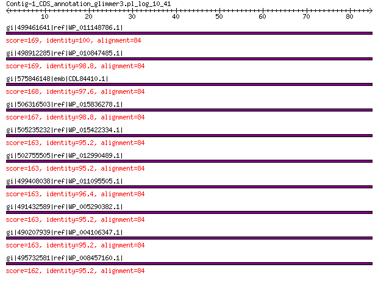

bitscore colors: <40, 40-50 , 50-80, 80-200, >200
 BLASTP 2.2.31+
Reference: Stephen F. Altschul, Thomas L. Madden, Alejandro A.
Schaffer, Jinghui Zhang, Zheng Zhang, Webb Miller, and David J.
Lipman (1997), "Gapped BLAST and PSI-BLAST: a new generation of
protein database search programs", Nucleic Acids Res. 25:3389-3402.
Reference for composition-based statistics: Alejandro A. Schaffer,
L. Aravind, Thomas L. Madden, Sergei Shavirin, John L. Spouge, Yuri
I. Wolf, Eugene V. Koonin, and Stephen F. Altschul (2001),
"Improving the accuracy of PSI-BLAST protein database searches with
composition-based statistics and other refinements", Nucleic Acids
Res. 29:2994-3005.
Database: All non-redundant GenBank CDS translations+PDB+SwissProt+PIR+PRF
excluding environmental samples from WGS projects
49,011,213 sequences; 17,563,301,199 total letters
Query= Contig-1_CDS_annotation_glimmer3.pl_log_10_41
Length=84
Score E
Sequences producing significant alignments: (Bits) Value
gi|499461641|ref|WP_011148786.1| MULTISPECIES: 30S ribosomal pro... 169 2e-52
gi|498912285|ref|WP_010847485.1| 30S ribosomal protein S17 169 4e-52
gi|575846148|emb|CDL84410.1| 30S ribosomal protein S17 168 6e-52
gi|506316503|ref|WP_015836278.1| 30S ribosomal protein S17 167 1e-51
gi|505235232|ref|WP_015422334.1| 30S ribosomal protein S17 163 4e-50
gi|502755505|ref|WP_012990489.1| 30S ribosomal protein S17 163 4e-50
gi|499408038|ref|WP_011095505.1| MULTISPECIES: 30S ribosomal pro... 163 4e-50
gi|491432589|ref|WP_005290382.1| MULTISPECIES: 30S ribosomal pro... 163 5e-50
gi|490207939|ref|WP_004106347.1| MULTISPECIES: 30S ribosomal pro... 163 6e-50
gi|495732581|ref|WP_008457160.1| 30S ribosomal protein S17 162 8e-50
>gi|499461641|ref|WP_011148786.1| MULTISPECIES: 30S ribosomal protein S17 [Photorhabdus]
gi|37528534|ref|NP_931879.1| 30S ribosomal protein S17 [Photorhabdus luminescens subsp. laumondii
TTO1]
gi|81833845|sp|Q7MYG0.1|RS17_PHOLL RecName: Full=30S ribosomal protein S17 [Photorhabdus luminescens
subsp. laumondii TTO1]
gi|36787972|emb|CAE17089.1| 30S ribosomal protein S17 [Photorhabdus luminescens subsp. laumondii
TTO1]
gi|530711212|gb|EQC02073.1| 30S ribosomal protein S17 [Photorhabdus temperata subsp. temperata
M1021]
gi|550875187|gb|ERT14220.1| 30S ribosomal protein S17 [Photorhabdus temperata J3]
gi|572731300|gb|ETS29489.1| SSU ribosomal protein S17P [Photorhabdus temperata subsp. khanii
NC19]
gi|604177078|gb|EYU13819.1| SSU ribosomal protein S17P [Photorhabdus luminescens BA1]
gi|662546831|gb|KER01469.1| SSU ribosomal protein S17P [Photorhabdus temperata subsp. temperata
Meg1]
Length=84
Score = 169 bits (428), Expect = 2e-52, Method: Compositional matrix adjust.
Identities = 84/84 (100%), Positives = 84/84 (100%), Gaps = 0/84 (0%)
Query 1 MTDKIRTLQGRVVSDKMEKSIVVAIERKVKHPLYGKFIKRTTKLHVHDENNECGIGDVVE 60
MTDKIRTLQGRVVSDKMEKSIVVAIERKVKHPLYGKFIKRTTKLHVHDENNECGIGDVVE
Sbjct 1 MTDKIRTLQGRVVSDKMEKSIVVAIERKVKHPLYGKFIKRTTKLHVHDENNECGIGDVVE 60
Query 61 IRETRPLSKTKSWTLVRVVEKAIL 84
IRETRPLSKTKSWTLVRVVEKAIL
Sbjct 61 IRETRPLSKTKSWTLVRVVEKAIL 84
>gi|498912285|ref|WP_010847485.1| 30S ribosomal protein S17 [Xenorhabdus nematophila]
gi|300721375|ref|YP_003710646.1| 30S ribosomal protein S17 [Xenorhabdus nematophila ATCC 19061]
gi|297627863|emb|CBJ88409.1| 30S ribosomal subunit protein S17 [Xenorhabdus nematophila ATCC
19061]
gi|484362896|emb|CCW30285.1| 30S ribosomal protein S17 [Xenorhabdus nematophila F1]
gi|575849921|emb|CDL87616.1| 30S ribosomal protein S17 [Xenorhabdus cabanillasii JM26]
Length=84
Score = 169 bits (427), Expect = 4e-52, Method: Compositional matrix adjust.
Identities = 83/84 (99%), Positives = 84/84 (100%), Gaps = 0/84 (0%)
Query 1 MTDKIRTLQGRVVSDKMEKSIVVAIERKVKHPLYGKFIKRTTKLHVHDENNECGIGDVVE 60
MTDKIRTLQGRVVSDKMEKSIVVAIERKVKHPLYGKFIKRTTKLHVHDENNECGIGDVVE
Sbjct 1 MTDKIRTLQGRVVSDKMEKSIVVAIERKVKHPLYGKFIKRTTKLHVHDENNECGIGDVVE 60
Query 61 IRETRPLSKTKSWTLVRVVEKAIL 84
IRETRPLSKTKSWTLVRVVEKA+L
Sbjct 61 IRETRPLSKTKSWTLVRVVEKAVL 84
>gi|575846148|emb|CDL84410.1| 30S ribosomal protein S17 [Xenorhabdus szentirmaii DSM 16338]
gi|661559766|emb|CDG15997.1| 30S ribosomal protein S17 [Xenorhabdus doucetiae]
gi|661566765|emb|CDG23167.1| 30S ribosomal protein S17 [Xenorhabdus poinarii G6]
Length=84
Score = 168 bits (425), Expect = 6e-52, Method: Compositional matrix adjust.
Identities = 82/84 (98%), Positives = 84/84 (100%), Gaps = 0/84 (0%)
Query 1 MTDKIRTLQGRVVSDKMEKSIVVAIERKVKHPLYGKFIKRTTKLHVHDENNECGIGDVVE 60
MTDKIRTLQGRV+SDKMEKSIVVAIERKVKHPLYGKFIKRTTKLHVHDENNECGIGDVVE
Sbjct 1 MTDKIRTLQGRVISDKMEKSIVVAIERKVKHPLYGKFIKRTTKLHVHDENNECGIGDVVE 60
Query 61 IRETRPLSKTKSWTLVRVVEKAIL 84
IRETRPLSKTKSWTLVRVVEKA+L
Sbjct 61 IRETRPLSKTKSWTLVRVVEKAVL 84
>gi|506316503|ref|WP_015836278.1| 30S ribosomal protein S17 [Photorhabdus asymbiotica]
gi|253991680|ref|YP_003043036.1| putative 30S ribosomal protein S17 [Photorhabdus asymbiotica]
gi|253783130|emb|CAQ86295.1| putative 30S ribosomal protein S17 [Photorhabdus asymbiotica]
Length=84
Score = 167 bits (423), Expect = 1e-51, Method: Compositional matrix adjust.
Identities = 83/84 (99%), Positives = 84/84 (100%), Gaps = 0/84 (0%)
Query 1 MTDKIRTLQGRVVSDKMEKSIVVAIERKVKHPLYGKFIKRTTKLHVHDENNECGIGDVVE 60
MTDKIRTLQGRVVSDKMEKSIVVAIERKVKHPLYGKFIKRTTKLHVHDE+NECGIGDVVE
Sbjct 1 MTDKIRTLQGRVVSDKMEKSIVVAIERKVKHPLYGKFIKRTTKLHVHDESNECGIGDVVE 60
Query 61 IRETRPLSKTKSWTLVRVVEKAIL 84
IRETRPLSKTKSWTLVRVVEKAIL
Sbjct 61 IRETRPLSKTKSWTLVRVVEKAIL 84
>gi|505235232|ref|WP_015422334.1| 30S ribosomal protein S17 [Morganella morganii]
gi|455737454|ref|YP_007503720.1| 30S ribosomal protein S17 [Morganella morganii subsp. morganii
KT]
gi|455419017|gb|AGG29347.1| 30S ribosomal protein S17 [Morganella morganii subsp. morganii
KT]
gi|570277868|gb|ETO41517.1| 30S ribosomal protein S17 [Morganella sp. EGD-HP17]
Length=84
Score = 163 bits (413), Expect = 4e-50, Method: Compositional matrix adjust.
Identities = 80/84 (95%), Positives = 82/84 (98%), Gaps = 0/84 (0%)
Query 1 MTDKIRTLQGRVVSDKMEKSIVVAIERKVKHPLYGKFIKRTTKLHVHDENNECGIGDVVE 60
MTDKIRTLQGRVVSDKMEKSIVV IER VKHPLYGKFI+RTTKLHVHDENNECGIGDVVE
Sbjct 1 MTDKIRTLQGRVVSDKMEKSIVVTIERMVKHPLYGKFIRRTTKLHVHDENNECGIGDVVE 60
Query 61 IRETRPLSKTKSWTLVRVVEKAIL 84
IRETRPLSKTKSWTLVRVVEKA+L
Sbjct 61 IRETRPLSKTKSWTLVRVVEKAVL 84
>gi|502755505|ref|WP_012990489.1| 30S ribosomal protein S17 [Xenorhabdus bovienii]
gi|290477183|ref|YP_003470098.1| 30S ribosomal protein S17 [Xenorhabdus bovienii SS-2004]
gi|289176531|emb|CBJ83340.1| 30S ribosomal subunit protein S17 [Xenorhabdus bovienii SS-2004]
gi|666603408|emb|CDH29089.1| 30S ribosomal subunit protein S17 [Xenorhabdus bovienii str.
Jollieti]
gi|666631598|emb|CDH31948.1| 30S ribosomal subunit protein S17 [Xenorhabdus bovienii str.
Intermedium]
Length=84
Score = 163 bits (413), Expect = 4e-50, Method: Compositional matrix adjust.
Identities = 80/84 (95%), Positives = 83/84 (99%), Gaps = 0/84 (0%)
Query 1 MTDKIRTLQGRVVSDKMEKSIVVAIERKVKHPLYGKFIKRTTKLHVHDENNECGIGDVVE 60
MTDKIRTLQGRV+SDKMEKSIVVAIER VKHPLYGKFIKRTTKLHVHDE+NECGIGDVVE
Sbjct 1 MTDKIRTLQGRVISDKMEKSIVVAIERVVKHPLYGKFIKRTTKLHVHDESNECGIGDVVE 60
Query 61 IRETRPLSKTKSWTLVRVVEKAIL 84
IRETRPLSKTKSWTLVRVVEKA+L
Sbjct 61 IRETRPLSKTKSWTLVRVVEKAVL 84
>gi|499408038|ref|WP_011095505.1| MULTISPECIES: 30S ribosomal protein S17 [Enterobacteriaceae]
gi|50122942|ref|YP_052109.1| 30S ribosomal protein S17 [Pectobacterium atrosepticum SCRI1043]
gi|253690174|ref|YP_003019364.1| 30S ribosomal protein S17 [Pectobacterium carotovorum subsp.
carotovorum PC1]
gi|81826995|sp|Q6CZX9.1|RS17_PECAS RecName: Full=30S ribosomal protein S17 [Pectobacterium atrosepticum
SCRI1043]
gi|259494790|sp|C6DG65.1|RS17_PECCP RecName: Full=30S ribosomal protein S17 [Pectobacterium carotovorum
subsp. carotovorum PC1]
gi|49613468|emb|CAG76919.1| 30S ribosomal subunit protein S17 [Pectobacterium atrosepticum
SCRI1043]
gi|251756752|gb|ACT14828.1| ribosomal protein S17 [Pectobacterium carotovorum subsp. carotovorum
PC1]
gi|549989938|gb|ERO57196.1| 30S ribosomal protein [Dickeya solani D s0432-1]
Length=84
Score = 163 bits (413), Expect = 4e-50, Method: Compositional matrix adjust.
Identities = 81/84 (96%), Positives = 82/84 (98%), Gaps = 0/84 (0%)
Query 1 MTDKIRTLQGRVVSDKMEKSIVVAIERKVKHPLYGKFIKRTTKLHVHDENNECGIGDVVE 60
MTDKIRTLQGRVVSDKMEKS+VVAIER VKHPLYGKFIKRTTKLHVHDENNECGIGDVVE
Sbjct 1 MTDKIRTLQGRVVSDKMEKSMVVAIERFVKHPLYGKFIKRTTKLHVHDENNECGIGDVVE 60
Query 61 IRETRPLSKTKSWTLVRVVEKAIL 84
IRE RPLSKTKSWTLVRVVEKAIL
Sbjct 61 IRECRPLSKTKSWTLVRVVEKAIL 84
>gi|491432589|ref|WP_005290382.1| MULTISPECIES: 30S ribosomal protein S17 [Edwardsiella]
gi|291088835|gb|EFE21396.1| 30S ribosomal protein S17 [Edwardsiella tarda ATCC 23685]
gi|451313666|dbj|GAC66168.1| 30S ribosomal protein S17 [Edwardsiella tarda ATCC 15947 = NBRC
105688]
Length=84
Score = 163 bits (413), Expect = 5e-50, Method: Compositional matrix adjust.
Identities = 80/84 (95%), Positives = 82/84 (98%), Gaps = 0/84 (0%)
Query 1 MTDKIRTLQGRVVSDKMEKSIVVAIERKVKHPLYGKFIKRTTKLHVHDENNECGIGDVVE 60
MTDKIRTLQGRVVSDKMEKSIVVAIER VKHP+YGKFIKRTTKLHVHDENNECGIGDVVE
Sbjct 1 MTDKIRTLQGRVVSDKMEKSIVVAIERMVKHPIYGKFIKRTTKLHVHDENNECGIGDVVE 60
Query 61 IRETRPLSKTKSWTLVRVVEKAIL 84
IRE RPLSKTKSWTLVRVVEKA+L
Sbjct 61 IRECRPLSKTKSWTLVRVVEKAVL 84
>gi|490207939|ref|WP_004106347.1| MULTISPECIES: 30S ribosomal protein S17 [Klebsiella]
gi|288933275|ref|YP_003437334.1| 30S ribosomal protein S17 [Klebsiella variicola At-22]
gi|375257672|ref|YP_005016842.1| 30S ribosomal protein S17 [Klebsiella oxytoca KCTC 1686]
gi|397660288|ref|YP_006500990.1| 30S ribosomal protein S17 [Klebsiella oxytoca E718]
gi|288888004|gb|ADC56322.1| 30S ribosomal protein S17 [Klebsiella variicola At-22]
gi|289775868|gb|EFD83868.1| 30S ribosomal protein S17 [Klebsiella sp. 1_1_55]
gi|365907150|gb|AEX02603.1| 30S ribosomal protein S17 [Klebsiella oxytoca KCTC 1686]
gi|376377630|gb|EHS90398.1| 30S ribosomal protein S17 [Klebsiella oxytoca 10-5245]
gi|376378728|gb|EHS91486.1| 30S ribosomal protein S17 [Klebsiella oxytoca 10-5243]
gi|376381932|gb|EHS94668.1| 30S ribosomal protein S17 [Klebsiella oxytoca 10-5242]
gi|376397652|gb|EHT10282.1| 30S ribosomal protein S17 [Klebsiella oxytoca 10-5250]
gi|394348334|gb|AFN34455.1| SSU ribosomal protein S17p (S11e) [Klebsiella oxytoca E718]
gi|402276020|gb|EJU25149.1| 30S ribosomal protein S17 [Klebsiella sp. OBRC7]
gi|410370534|gb|EKP25263.1| 30S ribosomal protein S17 [Klebsiella oxytoca M5al]
gi|500606325|gb|EOQ47047.1| 30S ribosomal protein S17 [Klebsiella sp. KTE92]
gi|524237322|emb|CDA01718.1| 30S ribosomal protein S17 [Klebsiella variicola CAG:634]
gi|555037127|gb|ESL81445.1| 30S ribosomal protein S17 [Klebsiella pneumoniae UCICRE 10]
gi|555124166|gb|ESM67039.1| 30S ribosomal protein S17 [Klebsiella oxytoca MGH 42]
gi|555127803|gb|ESM70423.1| 30S ribosomal protein S17 [Klebsiella pneumoniae MGH 40]
gi|555166534|gb|ESN09202.1| 30S ribosomal protein S17 [Klebsiella oxytoca MGH 28]
gi|555191023|gb|ESN33499.1| 30S ribosomal protein S17 [Klebsiella pneumoniae MGH 20]
gi|576685889|gb|EUB39216.1| 30S ribosomal protein S17 [Klebsiella sp. AS10]
gi|577045079|gb|EUC83818.1| 30S ribosomal protein S17 [Klebsiella oxytoca KA-2]
gi|577055188|gb|EUC92824.1| 30S ribosomal protein S17 [Klebsiella oxytoca OK-1]
gi|583515222|gb|EWD78870.1| 30S ribosomal protein S17 [Klebsiella pneumoniae UCI 18]
gi|583699519|gb|EWF61703.1| 30S ribosomal protein S17 [Klebsiella oxytoca MGH 41]
gi|583719196|gb|EWF81174.1| 30S ribosomal protein S17 [Klebsiella oxytoca MGH 27]
gi|601461839|gb|EYT04084.1| 30S ribosomal protein S17 [Klebsiella oxytoca G54]
gi|612157152|gb|AHW86641.1| 30S ribosomal protein S17 [Klebsiella oxytoca HKOPL1]
gi|635942121|gb|KDH22366.1| 30S ribosomal protein S17 [Klebsiella pneumoniae BIDMC 61]
gi|636379380|gb|KDL56638.1| 30S ribosomal protein S17 [Klebsiella pneumoniae MGH 68]
gi|636425539|gb|KDM02410.1| 30S ribosomal protein S17 [Klebsiella pneumoniae MGH 80]
gi|636452847|gb|KDM29487.1| 30S ribosomal protein S17 [Klebsiella pneumoniae MGH 76]
gi|660572665|gb|AID92585.1| 30S ribosomal protein S17 [Klebsiella oxytoca KONIH1]
gi|662707133|gb|AIE67442.1| 30S ribosomal protein S17 [Klebsiella oxytoca]
gi|668900835|gb|KFC34558.1| 30S ribosomal protein S17 [Klebsiella oxytoca]
gi|674224001|gb|KFJ97430.1| 30S ribosomal protein S17 [Klebsiella variicola]
Length=84
Score = 163 bits (412), Expect = 6e-50, Method: Compositional matrix adjust.
Identities = 80/84 (95%), Positives = 82/84 (98%), Gaps = 0/84 (0%)
Query 1 MTDKIRTLQGRVVSDKMEKSIVVAIERKVKHPLYGKFIKRTTKLHVHDENNECGIGDVVE 60
MTDKIRTLQGRVVSDKMEKSIVVAIER VKHP+YGKFIKRTTKLHVHDENNECGIGDVVE
Sbjct 1 MTDKIRTLQGRVVSDKMEKSIVVAIERMVKHPVYGKFIKRTTKLHVHDENNECGIGDVVE 60
Query 61 IRETRPLSKTKSWTLVRVVEKAIL 84
IRE RPLSKTKSWTLVRVVEKA+L
Sbjct 61 IRECRPLSKTKSWTLVRVVEKAVL 84
>gi|495732581|ref|WP_008457160.1| 30S ribosomal protein S17 [Enterobacter sp. Ag1]
gi|394731555|gb|EJF31314.1| 30S ribosomal protein S17 [Enterobacter sp. Ag1]
Length=84
Score = 162 bits (411), Expect = 8e-50, Method: Compositional matrix adjust.
Identities = 80/84 (95%), Positives = 82/84 (98%), Gaps = 0/84 (0%)
Query 1 MTDKIRTLQGRVVSDKMEKSIVVAIERKVKHPLYGKFIKRTTKLHVHDENNECGIGDVVE 60
MTDKIRTLQGRVVSDKMEKSIVVAIER VKHP+YGKFIKRTTKLHVHDENNECGIGDVVE
Sbjct 1 MTDKIRTLQGRVVSDKMEKSIVVAIERVVKHPIYGKFIKRTTKLHVHDENNECGIGDVVE 60
Query 61 IRETRPLSKTKSWTLVRVVEKAIL 84
IRE RPLSKTKSWTLVRVVEKA+L
Sbjct 61 IRECRPLSKTKSWTLVRVVEKAVL 84
Lambda K H a alpha
0.319 0.134 0.378 0.792 4.96
Gapped
Lambda K H a alpha sigma
0.267 0.0410 0.140 1.90 42.6 43.6
Effective search space used: 431162850036